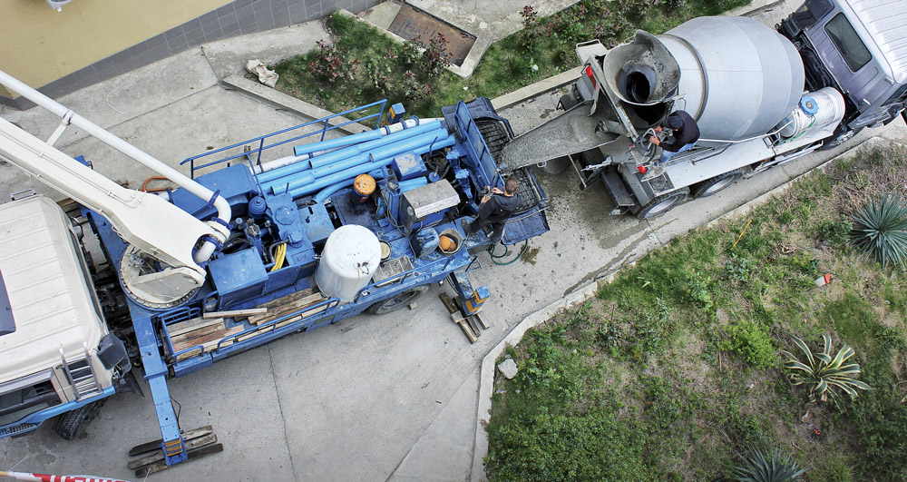

Співпраця
Тісна співпраця з нашими партнерами на професійному ринку послуг - дозволяє нам комплексно знайти підхід для вирішення завдань, що стоять перед нашими клієнтами.
Тісна співпраця з нашими партнерами на професійному ринку послуг - дозволяє нам комплексно знайти підхід для вирішення завдань, що стоять перед нашими клієнтами.
Гнучка система знижок та прозорість при отриманні розрахунків.
Контроль Якості сипучих матеріалів і безпосередньо перед виробництвом
Ми працюємо 24/7 та навіть у вихідні, а доставку здійснюємо власним автопарком
Максимально автоматизований процес виготовлення та доставки продукції до буд.майданчику
Товарний Бетон та розчини. Якісну продукцію з паспортом якості з розвинених мереж бетонозмішувальних вузлів виробників в Києві та Київській області, з яких відбувається відвантаження .
ЗБВ.Якісні та різноманітні конструкції з залізобетона з можливістю доставки до Вашого об’єкту.
Доставка.Машини компанії обладнані супутниковою системою навігації, що дозволяє контролювати рух автомобіля та точно планувати своєчасну доставку продукції у вказане Вами місце.
Оренда стаціонарних та Автобетононасосів.Створені для транспортування бетонної суміші безпосередньо до точки бетонування, Стаціонар довжина траси до 100м, автобетононасоси стрілові від 16м до 58м
Прагнемо розвивати довгострокові і плідні відносини з клієнтами, пропонуючи якісні послуги, що відображають потреби своїх покупців
Ми ретельно дослуховуємося до завдання клієнта. Всі наші дії спрямовані на зручність для кожного конкретного клієнта і миттєво реагуємо на додаткові побажання побажання.
Перевірка відбувається в процесі видобутку сипучих матеріалів і безпосередньо перед самим виробництвом бетону або розчину.

Щиро вітаємо Вас з Новим роком та Різдвом Христовим!
Дякуємо за Вашу професійну і наполегливу працю, натхнення і відданість на шляху до розвитку будівельної галузі України.
Бажаємо Вам добробуту, миру і міцного здоров’я.
Нехай прийдешній рік здійснить усі сподівання та принесе щастя Вашому дому!
З повагою, Колектив ТОВ «ТМГ ТРАНСБУД»
Найнижча марка бетону. Основна область застосування при проведенні підготовчих робіт перед заливанням монолітних плит та стрічок фундаменту. Йдеться про бетонній підготовці, коли на піщану подушку укладають низькомарочних бетон (М-100) і після його затвердіння починають виробляти арматурні роботи. Також бетони цієї марки використовують в дорожньому будівництві, в якості бетонної подушки і для установки бордюрів.
Може застосовуватися для стяжок, фундаментів під невеликі споруди, однак основне призначення – для підготовчих робіт перед заливанням монолітних плит фундаментів.
Бетон цієї марки широко використовується в виготовленні бетонних стяжок підлог, фундаментів, відмосток, доріжок та ін. Міцність М-200 цілком достатня для вирішення більшості завдань індивідуального будівництва: фундаменти (стрічкові, плитні, свайно – ростверкових), виготовлення бетонних сходів, площадок і т . Д. У заводських умовах (заводах і комбінатах ЗБВ) з цієї марки бетону виготовляються фундаментні блоки, дорожні плити та інші бетонні вироби.
Застосовується в основному для виготовлення монолітних фундаментів, в тому числі стрічкових, плитних, свайно-ростверкових, малонавантажених плит перекриттів, стрічок заборів, сходів, підпірних стін та ін.
Основне застосування – виготовлення монолітних фундаментів, свайно – ростверкових залізобетонних конструкцій, плит перекриттів, колон, ригелів, балок, монолітних стін, промислових підлог, чаш басейнів та інших відповідальних конструкцій. З конструкційного бетону М-350 виготовляють аеродромні плити, здатні витримувати екстремальні навантаження. Ця марка бетону найбільш популярна в комерційному будівництві, її найчастіше використовують при виробництві ЗБВ.
Широко використовується в монолітно-каркасному будівництві при зведенні житлових будинків підвищеної поверховості. У приватному будівництві практично не застосовується, так як така висока міцність в малоповерховому будівництві не потрібно і зовсім не виправдовує високу вартість такого бетону. Виробництво М-400 допустимо тільки на гранітному щебені, що робить його досить дорогим. Як правило, використання бетону марки М-400 регламентовано спеціальними вимогами і в основному для спеціальних виробів ЗБВ і ЖБК. Застосовується для мостових конструкцій, гідро – технічних споруд, банківських сховищ та інших конструкцій з спецтребованіямі.
Практично аналогічний по застосуванню попередньої марці бетону: греблі, дамби, колони, балки і ін. У приватному будівництві застосовується дуже рідко.
Область застосування – мостові конструкції, гідротехнічні споруди, метро та інші конструкції зі спеціальними вимогами.
Кожен з нас хоч раз в житті особисто, своїми руками брав і робив бетон. У бабусі, на дачі, ганок біля під'їзду, в гаражі. Мішок цементу, тачка піску, три тачки щебеню і води, просто додай води. А потім напружся, або включи бетономішалку.
І ось, суміш інгредієнтів перетворюється в сіру однорідну масу, що завмерши, прийме форму фундаменту, блоку, плити перекриття, перемички, сходового маршу, доріжки на ділянці, бордюру ...
Ті, хто щодня використовують бетон - будівельники, виконроби, - ті можуть вже за зовнішнім виглядом припустити його марку і якість. Приватний забудовник - той, хто довго збирав гроші, читав в інтернеті, хто сам будує свій будинок - не завжди знає, що бетон бетону ворожнечу. І думки, що яка різниця, - думки небезпечні в прямому сенсі. Неякісний бетон, бетон за малі гроші - це ризик. Ризик ваш і ваших нащадків, всіх тих, хто буде жити в цьому будинку. До ризиків ставитися низька марка, недовговічність бетону, низька морозостійкість, висока водопроникність, поява тріщин і т.д.
Чому? Та тому, що цементи різні і, в залежності від типу цементу, потрібно застосовувати різні дозування: є пісок, що містить пил і глинисті включення і низький модуль крупності, що призведе до погіршення якості, є поняття фракції щебеню і його лещатность і, природно, Такий висновок марки бетону, в якому підібрано оптимальне співвідношення цементу, води, піску, щебеню та хімічних добавок до бетону або розчину. Кожну складову бетону потрібно перевіряти на якість і аналізувати: чи підходить цемент, пісок, щебінь, хім. добавка і вода для даного бетону.
Всі сучасні бетони в своєму складу мають хімічну добавку. Цей компонент має багато функцій: робить бетон більш пластичним, що спрощує роботи з ним, так звана легкоукладальність, дозволяє домогтися високу марочну міцність, за допомогою хімічних добавок при доставці бетон не змінює свої властивості в дорозі (влітку не схоплюється, а взимку не замерзає) , також за допомогою хімічних добавок регулюється час його схоплювання і інтенсивність набору міцності (в літній період сповільнюється - для того, щоб бетон не тріскався, а в зимовий час - щоб прискорювати гідратацію, що дозволить не завмер знуть воді в бетоні і дасть приріст міцності при низьких температурах).
Тепер по суті. Калькулятор Вам на допомогу. Цемент коштує грошей? Так, причому чим вище марка, тим він дорожчий, ще й репутація виробника коштує грошей. Пісок, щебінь, вода, хім. добавка, розробка складів (рецептура), виробництво, доставка, гарантовано точний обсяг бетону, якісна вивантаження його. Все це гроші. І, якщо замість цементу вам додадуть золи, а замість чистого піску навалять глинистої яру породи, та й щебеню дадуть не кубоподібного, ще й на обсязі обдурять, ще й з підробленими документами, де буде вказана потрібна вам марка, а в машині буде нижче, то зрозуміло, що такий бетон може бути проданий і куплений за менші гроші.
Питання в одному, навіщо тому, хто будує для себе і своєї сім'ї, такий ризик?
Не женіться за дешевизною. Це в буквальному сенсі небезпечно у всіх відносинах.
Ніхто і ніколи не продасть якісний бетон нижче собівартості.
Звертайтеся в Промбудцентр і Ви отримаєте саме те, що Вам потрібно для будівництва.
В потрібний час.
У потрібному місці.
В точному обсязі.
Вищої якості.
Бетон – штучний кам’яний матеріал, який можна отримати в результаті твердіння спеціально приготованою і ретельно перемішаної суміші, що складається з в’яжучого матеріалу, великого і дрібного заповнювача і води, взятих у певних пропорціях (індивідуальні рецепти). До затвердіння і перетворення в кам’яний матеріал цю суміш називають «бетонної сумішшю». При необхідності або согластно будь-яких умов в бетонну суміш додають спеціальні добавки, які покращують його технологічні і структурні характеристики, наприклад, для укладання бетону в зимових умовах.
Цемент і вода є активними складовими бетону, в результаті реакції між ними утворюються так званий цементний камінь, що скріплює зерна заповнювачів у єдиний моноліт. Заповнювачі впливають на структуру і властивості бетону, змінюючи його пористість, час затвердіння, реакцію на вплив навантаження і зовнішнього середовища, а також значно зменшують деформацію бетону при твердінні. Різноманітність наповнювачів, добавок і технологічних прийомів дозволяє отримувати бетони з різними властивостями, завдяки чому бетон є основним будівельним матеріалом, який застосовують у всіх областях будівництва.
Бетон довговічний і вогнестійкий, його щільність, міцність і інші характеристики можна змінювати і отримувати матеріал із заданими властивостями. Бетонна суміш при належній обробці дозволяє виготовляти конструкції оптимальної форми з точки зору будівельної механіки і архітектури.
При зведенні будівель з бетону, його види та марки визначаються на стадії створення проекту. Для різних елементів будівельної конструкції застосовуються різні види і марки бетонів.
Основною характеристикою бетону є міцність при стисненні, яка визначає марку бетону. Бетон класифікується також за середньою густиною, виду в’яжучого речовини і призначенням. Властивості бетону залежать від його щільності, на величину якої впливає вид заповнювача і структура бетону.
По виду в’яжучого речовини бетон поділяють на: цементний (найбільш поширений), силікатна (вапняно-кремнеземний), гіпсовий, змішаний (цементно-вапняний, вапняно-шлаковий і т.п.), спеціальний – застосовуваний при наявності особливих вимог (жаростійкості, хімічної стійкості та ін.).
По виду заповнювача розрізняють бетони на: щільних, пористих, спеціальних заповнювачах, що задовольняють спеціальним вимогам (захисту від випромінювань, жаростійкості, хімічної стійкості і т.п.). У вигляді наповнювачів застосовують місцеві кам’яні матеріали: пісок, гравій, щебінь, а також побічні продукти промисловості.